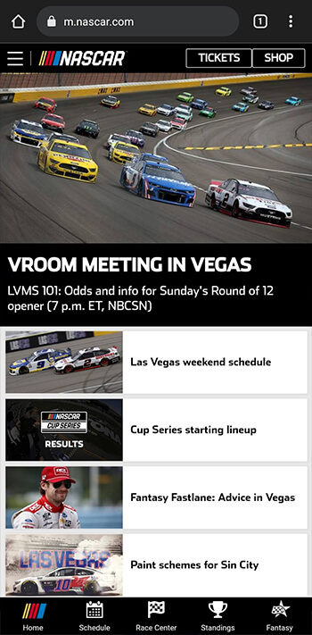

Alignment
NASCAR.com
The NASCAR mobile homepage has great alignment. The elements are organized in a way that it very easy to read and interpret. The positioning of the different parts of the page are consistent looking and pleasing to the eye. One example is the images on the articles on the lower half of the screen. They are all the same size and leave enough space to be able to read the headlines.
Proximity
dbrand.com
This site does a great job of using proximity to emphasize the importance of different elements on the page. The obvious example here is the large image with the heading and description being the only things visible when you first load the website. This relationship between the large image and smaller heading and text show that they really wanted to emphasize the image and product they are trying to sell.
Contrast
Github.com
Github does a great job with their homepage of highlighting the things that they believe their users are going to be looking for. They do this with good contrast. The heading, text input, and sign up button stick out like a sore thumb, while the less important descriptive text is more subdued to not distract the user from what they are most likely looking for. However, it is still bright enough to be easily readable.